최신 연구와 실제 활용 사례
연구와 산업 현장에서 Nextflow를 어떻게 활용하는지 살펴보고, 내 업무에 연결할 새로운 아이디어를 만나보세요.

Seqera가 주최하는 Nextflow Summit은 전세계 과학자들이 한데 모여 커뮤니티 주도의 data science와 computational biology 혁신을 통해 바이오테크 R&D의 미래를 이야기하는 행사입니다.
이번 10월 전세계 온라인으로 중계되는 Virtual Nextflow Summit에 참여하고, 오프라인 Nextflow Training & nf-core Hackathon 행사에도 참여해보세요(바르셀로나 Hotel SB Glow).
Virtual Nextflow Summit은 전 세계 어디서나 참여할 수 있는 Nextflow 커뮤니티의 대표 행사입니다. 제약·바이오테크 분야의 연구자, 개발자, 업계 리더들이 최신 연구와 혁신적인 해결책, 실제 활용 사례를 공유합니다.
연구와 산업 현장에서 Nextflow를 어떻게 활용하는지 살펴보고, 내 업무에 연결할 새로운 아이디어를 만나보세요.
파이프라인 개발자, 데이터 분석가, 팀 리더 모두 전문가의 경험에서 배우고 업무를 발전시킬 지식과 기술을 얻을 수 있습니다.
같은 관심사를 가진 동료들과 연결되고, 새로운 관점과 배움을 바탕으로 연구와 프로젝트를 이어갈 동력을 얻으세요.
매일 20:00–익일 02:20 (KST).
사전 등록한 참가자에게 참여 링크가 제공됩니다.
제목을 누르면 공식 영문 발표 소개가 새 탭에서 열립니다.
같은 시간대의 동시 진행 세션 중 하나를 선택해 참여하세요.
한국 시간 · 20:00–다음 날 02:20
한국 시간 · 20:00–다음 날 02:20
발표 제목은 한국어 번역이며, 상세 내용은 연결된 공식 영문 페이지를 확인하세요. 일정은 변경될 수 있습니다.
공식 영문 어젠다 ↗Nextflow와 nf-core, 재현 가능한 연구 워크플로우에 관심 있는 연구자·분석가·개발자 누구나 공식 사이트에서 등록할 수 있습니다.
Virtual Nextflow Summit은 무료 온라인 행사입니다. 아래 버튼을 누르면 주최 측의 공식 등록 페이지로 이동합니다.
이 페이지는 한국어 행사 안내입니다. 한국어 세션이나 통역 제공 여부는 확인되지 않았으므로, 발표 언어 등 자세한 사항은 공식 사이트를 확인하세요.

10월 13–14일, 온라인에서 만나요.